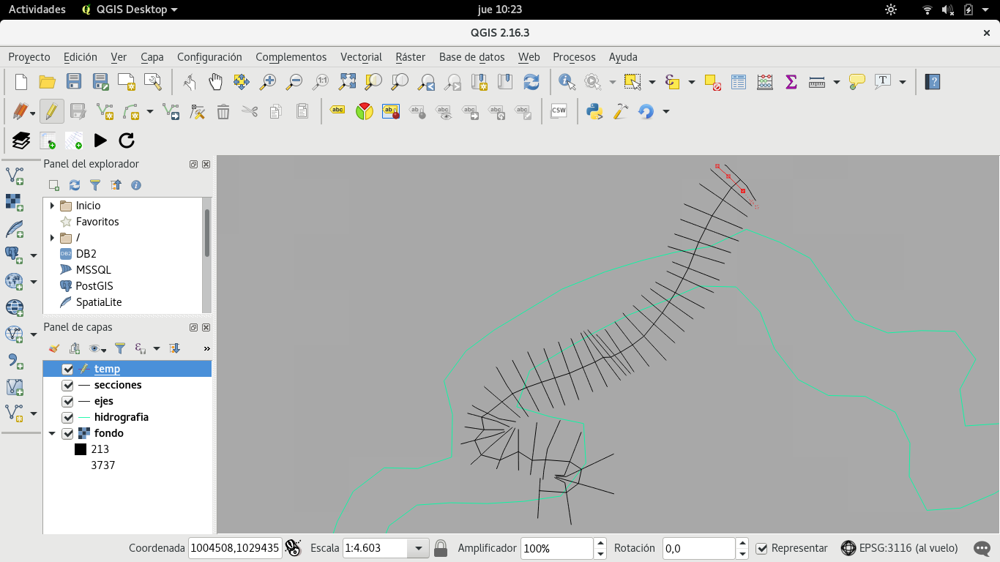

Manual de usuario¶
Una vez instalado el plugin CalidadCAR, de desplegará la seiguiente barra de herramientas:
La cual contiene los siguientes procedimientos que pordá realizar el usuario:
Cargar fondos¶
Con esta acción el usuario puede cargar las capas necesarias, para poder realizar _____________, para poder realizar esta operación el usario tendrá que hacer click en el icono resaltado que se ve en la siguiente imagen.
La cual desplegará el siguiente dialogo en el que el usuario podrá buscar los diferentes archivos en su sistema de archivos, para cargar las capas.

Una vez seleccionadas todas las capas que el usuario desea cargar, se desplegarán los dialogos correspondientes para solicitar el sistema de coordenadas de cada capa que se va a cargar.

Una vez seleccionado el sistema de coordenadas de las capas que se van a cargar, estas se podrán visualizar en el canvas de QGIS, como se ve en la siguiente imagen, para visualizar directamente la capa de secciones, el usuario podrá hacer click en el icono resaltado en la siguiente imagen:

En la siguiente imagen se puede ver el canvas de QGIS una vez el usuario ha realizado un acercamiento a la capa de secciones:

Unir CSV¶
Este procedimiento consiste en cargar un archivo CSV, el cual se unira con la tabla de atributos de la capa de secciones, la cual tendrá que estar cargada, para que el usuario pueda realizar esta operación.
En la siguiente imagen se puede ver el dialogo que le pedirá al usuario la información necesaria para cargar el archivo CSV, y para poder unirlo con la capa de secciones.

Si el usuario desea realizar la union de otro archivo CSV con la para de secciones, tendrá que repetir el procedimiento que se acabo de describir.
Agregar secciónes¶
Haciendo click sobre el botón subrayado en la siguiente imagen el usuario podrá agregar secciones transversales.
Al hacer click sobre el botón de agregar sección se creara una capa de QGIS temporal en la que el usuario podrá dubujar las secciones que deseé, esto le habilitará al usuario el botón de Añadir cadena circular, el cual se ve resaltado en la siguiente imagen.

Después de hacer click sobre el click sobre el botón de Añadir cadena circular el usuario podrá ubicar los puntos de la cadena, o la sección para dibujarla, como se ve en la siguiente imagen.
En la imagen de arriba se puede ver la sección que se acabó de agregar (La sección con puntos rojos), Apretando el click derecho del mouse se finalizará la operación de agregarle puntos a la sección, y se le desplegrá al usuario un diálogo en el cual el podrá ingresar la información relacionada con la sección, como se puede ver en la siguiente imagen.

Nota
Para poder agregar una sección es necesario que el usuario haya cargado previamente la capa de ejes, y la capa de secciones.
Nota
Es importante que la sección que se va a agregar se intersecte con la el eje de la capa de ejes.
Cálcular¶
Limpiar¶
Al hacer click en el botón resaltado en la siguiente imagen el usuario limpiara el espacio de trabajo, cerrando las capas cargadas, en caso que deseé realizar el mismo proceso con capas diferentes.
Nota
Las capas que contengan información de salida, fruto del proceso ___________ no se cerrarán.